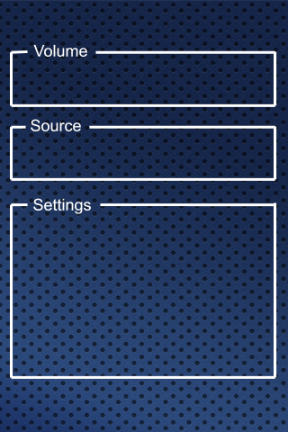

|
This page last changed on Dec 07, 2011 by pjmm.
Video on Russound
I see the Video on Russound integration which Marcus has posted and I believe
that if designs were shared it would answer many of the questions which are
raised on this forum.
I know from my own experience that sometimes looking at an example helps
more than reading the documentation.
I have made several attempts at putting a slide into a design but I cannot get it to
work correctly.
There is an option in Designer to save a screen as a Public or Private Template I know this feature works.
There is also an option to Invite other users to access an account. I do not know if this feature works.
Marcus would it be possible for you to save your Russound screen as a Public Template and let us know the name.
I believe if I can see how you have set up
your slides in designer I will see how to fix my design.
If any other users would like to start sharing designes I would like to hear from them.
Pierce
|
Pierce,
the design I made for the Russound video was created on my local running designer. Unfortunately the designer does not allow export and import in the moment (it's on the todo list). This means I cannot share the design as a template 
In general the design only has a background picture and 2 images for the on/off status of the switch widget. See attached files.
For the slider to work you need to create 2 commands (one to set the value and one to read the value). The read value command has to be used to create a sensor object which is of type scale with value 0-100. The sensor and the command to set the value will be used to create the slider (still building modeler).
Now you can use a slider widget (ui designer) and link to the slider object.
--Marcus



Posted by mredeker at Dec 07, 2011 21:51
|
|
Did you ever get this working Pierce? I have been trying to get this working but I cannot find any documentation on how to do it. I understand the UI design panel but I get lost on the building modeler. I have the controller all set up and working. Where do you set the COM port for the russound? Any help would be appreciated.
-Spencer
Posted by spencerthomass at Dec 21, 2011 19:14
|
|
{kind=link}
{kind=link}
{kind=link}
{kind=link}